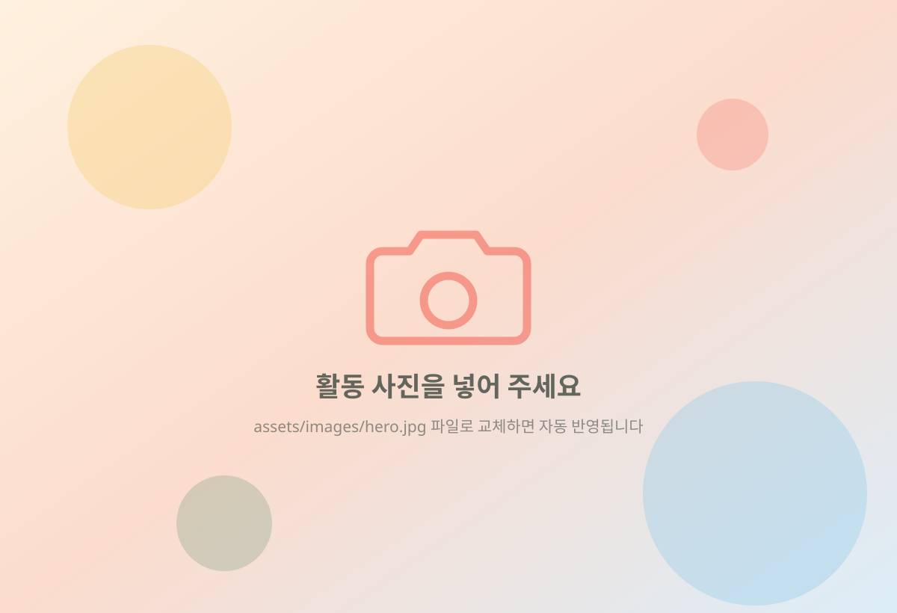

사단법인 위드프렌즈
아이들의 오늘을 돌보고,
아이들의 오늘을 돌보고,
지역의 내일을 함께 만듭니다.
사단법인 위드프렌즈는 아이들이 안전하게 배우고 꿈꾸며 성장할 수 있도록 지역사회와 함께합니다.
후원 신청과 결제는 외부 사이트인 체리 기부 플랫폼에서 진행됩니다.
현재 체리 기부 페이지 주소가 등록되지 않아 후원 버튼이 연결되지 않습니다.

5
개소의 돌봄 공간
지역아동센터 3 · 다함께돌봄센터 2
지역아동센터 3 · 다함께돌봄센터 2
빠른 이용 메뉴
운영시설 5개소
우리 동네 가까이에서 만나는 위드프렌즈
지역아동센터 3개소와 다함께돌봄센터 2개소가 아이들을 맞이하고 있습니다. 센터 유형으로 골라 보세요.
센터가 있는 곳
모든 센터는 경기도 부천시에 있습니다. 센터 이름을 누르면 상세 안내로 이동합니다.
주요사업
아이들의 성장을 위한 여섯 가지 일
법인 정관에 담긴 목적사업입니다. 지역사회와 연결해 아이들을 통합적으로 지원합니다.
성장 이야기
함께해서 달라진 오늘
센터에서 만들어지는 하루하루의 이야기를 전합니다.
숫자로 보는 위드프렌즈
지역 안에서 자라는 돌봄의 자리
확인된 수치만 표시합니다. 아동 수·후원자 수 등은 자료가 확인되는 대로 공개합니다.
아이들의 든든한 친구가 되어 주세요.
작은 참여가 아이들에게는 오래 남는 응원이 됩니다. 후원과 봉사, 협력으로 함께해 주세요.
후원 신청과 결제는 외부 사이트인 체리 기부 플랫폼에서 진행됩니다. 위드프렌즈 홈페이지에서는 결제 정보를 받지 않습니다.
현재 체리 기부 페이지 주소가 등록되지 않아 후원 버튼이 연결되지 않습니다.